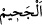
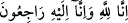

başka iftirâlarda bulunarak reddetmek ve iptal etmek hususunda peygamberleri ve
onların dostlarını “âciz bırakmak üzere gayret edenlere” uğraşıp çabalayanlara,
Allah’ın emrinden âciz hâle getirmek için onlara karşı koyan ve mukavemet gösterenlere
veya bizi âciz bırakacaklarını ve kendilerine gücümüzün yetmeyeceğini zannedenlere ya
da âyetlerimiz hakkında inâdlaşanlara ve birbirleriyle yarışanlara “gelince,” Kâşifî der
ki: “Kemallerinin bizden üstün olduğunu düşünür bir durumda olanlara, yâni bizden
kurtulmak isteyen ve azâbımızın kendilerinden geçip gitmesini dileyenlere gelince”
“işte bunlar,” âciz bırakmak ve âyetler aleyhinde gayret etmekle vasfedilenler
“cehennemliklerdir.” Yâni tutuşturulmuş cehennem ateşinden ayrılmayacaklardır. “__WORD__” in cehennemin derekelerinden bir derekenin ismi olduğu da söylenmiştir.
Mesnevî’de der ki:
Kim Hakk’ın mumuna püf derse
Kendi ağzı yanar, mum söner mi hiç?
Deniz, köpeğin ağzıyla pislenir mi hiç?
Güneş üflemekle söner mi hiç?
et-Te’vîlâtü’n-Necmiyye’de der ki: “Âyet işâret etmektedir ki Allah’ın dostlarının
havassından/seçkinlerinden Allah’ın âyetlerinin ehliyle inâdlaşanlar, işte onlar kin,
düşmanlık, velâyeti red, Allah’ın nazarından düşme cehenneminin ashâbıdırlar.
Tutuşturulmuş cehennem ateşi ise âhirettedir. Allah Teâlâ bir kula hayır dilerse onu
inkârdan çevirir, tevbe ve istiğfara muvaffak kılar.”
Nakledilir ki bir adam şöyle dedi: “Ben sûfîlere kin besliyordum. Bir gün Bişr
Hâfî’yi gördüm. Cuma namazından çıkmıştı. Ekmek, kızarmış et ve pelte aldı.
Bağdad’dan çıktı. Kendi kendime: “Bu zat şehrin zâhidi bir kimsedir.” dedim ve ne
yapacağını görmek için onu izledim.
Onun bu yiyeceklerle sahrâda kendisine ziyafet çekeceğini zannettim. İkindi vaktine
kadar yürüdü. Bir köyün mescidine girdi. Orada bir hasta vardı. Satın aldıklarını ona
yedirmeye başladı.
Ben köyü dolaşmaya gittim. Sonra mescide geri geldiğimde Bişr’i bulamadım.
Hastaya nereye gittiğini sordum. “Bağdad’a gitti” dedi. Ona: “Burası ile Bağdad arası
ne kadardır?” diye sordum. O kimse: “Kırk fersahtır.” dedi. Ben: “__WORD__ Biz
Allah içiniz ve biz O’na döneceğiz. (el-Bakara, 2/156)” dedim.
Yanımda binit kiralayacak para yoktu. Yürüyerek gitmekten de âcizdim. Bu sebeple
öbür cumaya kadar orada kaldım. Bişr tekrar yiyeceklerle hastanın yanına geldi. Hasta
ona: “Ey Ebû Nasr, bu adamı evine gönder.” dedi. Bişr bana öfkeli öfkeli baktı. “Niye
benim peşimden geldin?” dedi. Ben: “Hatâ ettim beni yerime ulaştırıver.” dedim. O da:
“Git bir daha sûfîlere düşmanlık etme!” dedi. Ben Allah’a tevbe ettim, fukarâya